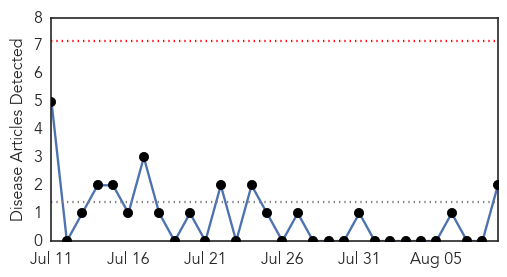
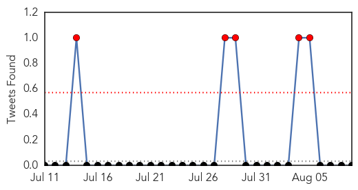

Swine Flu
30-Day Web Trend
0 alerts, 0 warnings

30-Day Twitter Trend
5 alerts, 0 warnings

Article Locations
Article Confidences

Top Articles:
Top Tweets:
-
No tweets found for Aug 09, 2014
West Nile Virus
30-Day Web Trend
2 alerts, 0 warnings

30-Day Twitter Trend
0 alerts, 0 warnings

Article Locations

Article Confidences

Top Articles:
- 0.994
- Second Louisiana resident dies from West Nile virus; 14 new cases reported
- 0.979
- First Cases Of Human West Nile Virus In Pennsylvania And New Jersey; Higher Than Normal Amount Of Mosquitoes Testing Positive For Virus « CBS Philly
- 0.965
- Hawk is second dead bird in San Diego County with West Nile virus
- 0.894
- Pa. and N.J. report season's first West Nile cases
Top Tweets:
-
No tweets found for Aug 09, 2014